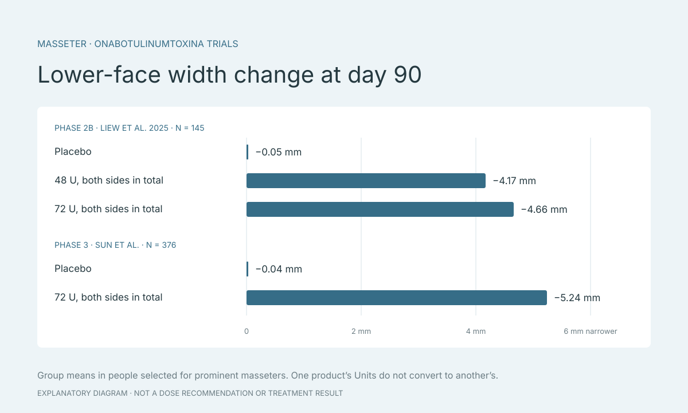

โบท็อกซ์ลดกราม กี่ยูนิต หน้าแคบลงกี่มิลลิเมตร? สิ่งที่งานวิจัยวัดได้
คนที่ค้นหา “โบท็อกซ์ลดกราม กี่ยูนิต” มักอยากรู้สองเรื่อง คือใช้ยาเท่าไร และหน้าจะแคบลงแค่ไหน งานวิจัยแบบสุ่มที่มีกลุ่มยาหลอกให้ตัวเลขทั้งสองเรื่องในกลุ่มผู้เข้าร่วมที่คัดเลือกไว้ บทความนี้สรุปตัวเลขเหล่านั้น อธิบายว่าทำไมยูนิตของแต่ละผลิตภัณฑ์เทียบกันไม่ได้ และแยกการลดกรามออกจากการลดริ้วรอย เพื่อใช้เตรียมคำถาม ไม่ใช่คำแนะนำขนาดยา

ประเด็นสำคัญ
- ยูนิตของแต่ละผลิตภัณฑ์เทียบหรือแปลงข้ามกันไม่ได้
- ในงานวิจัย รวมสองข้าง 48–72 ยูนิต ความกว้างใบหน้าส่วนล่างลดลงเฉลี่ย 4.17–5.24 มิลลิเมตรที่ 90 วัน
- ผลลดริ้วรอยวัดด้วยคะแนนขณะทำสีหน้า ไม่ใช่มิลลิเมตรบนสแกนท่านิ่ง
ยูนิตของโบท็อกซ์คืออะไร
ยูนิต (Unit หรือ U) คือหน่วยวัดฤทธิ์ของสารโบทูลินัมท็อกซินแต่ละผลิตภัณฑ์ เอกสารกำกับยา BOTOX Cosmetic ระบุว่ายูนิตของผลิตภัณฑ์หนึ่งใช้กับผลิตภัณฑ์นั้นเท่านั้น เปรียบเทียบหรือแปลงเป็นยูนิตของผลิตภัณฑ์อื่นไม่ได้ ตัวเลขยูนิตในบทความนี้จึงเป็นของ onabotulinumtoxinA ในงานวิจัยที่อ้างถึงเท่านั้น
ปริมาตรน้ำเกลือที่ใช้ผสมยาไม่ได้บอกขนาดยาหรือผลบนใบหน้า เวลาคุยกับคลินิกจึงควรถามชื่อผลิตภัณฑ์และจำนวนยูนิตของผลิตภัณฑ์นั้น ไม่ใช่ถามเพียงจำนวน cc หรือจำนวนจุดที่ฉีด

โบท็อกซ์ลดกราม: ความกว้างที่วัดได้ในงานระยะที่ 2
Liew และคณะ (2025) ศึกษาผู้เข้าร่วม 145 คนที่มีกล้ามเนื้อกราม (masseter) เด่น แบ่งเป็นกลุ่มยาหลอกและกลุ่มที่ได้รับ onabotulinumtoxinA สองขนาด คือรวมสองข้าง 48 ยูนิต และ 72 ยูนิต ที่วันที่ 90 ความกว้างใบหน้าส่วนล่างลดลงเฉลี่ย 4.17 และ 4.66 มิลลิเมตรตามลำดับ ขณะที่กลุ่มยาหลอกลดลง 0.05 มิลลิเมตร
48 และ 72 ยูนิตเป็นยอดรวมของทั้งสองข้าง และ 4.17–4.66 มิลลิเมตรคือความกว้างรวมของใบหน้าส่วนล่าง ไม่ใช่การยุบของแต่ละข้าง ผลที่ขนาดสูงต่างจากขนาดต่ำไม่มาก งานนี้จึงไม่ได้ให้สูตรว่าเพิ่มยาทุกกี่ยูนิตแล้วหน้าจะแคบลงอีกเท่าไร
งานระยะที่ 3: ขนาดเดียวกัน แต่ค่าเฉลี่ยไม่เท่ากัน
งานระยะที่ 3 ของ Sun และคณะ มีผู้เข้าร่วม 376 คน ได้รับยา 283 คน และยาหลอก 93 คน ผู้เข้าร่วมมีกล้ามเนื้อกรามเด่นระดับมากถึงมากที่สุด ที่วันที่ 90 กลุ่มที่ได้รับรวมสองข้าง 72 ยูนิต ความกว้างใบหน้าส่วนล่างลดลงเฉลี่ย 5.24 มิลลิเมตร เทียบกับ 0.04 มิลลิเมตรในกลุ่มยาหลอก
ขนาดยาเท่ากับกลุ่ม 72 ยูนิตในงานระยะที่ 2 แต่ค่าเฉลี่ยต่างกันราว 0.6 มิลลิเมตร ความต่างระหว่างกลุ่มผู้เข้าร่วมแบบนี้คือความไม่แน่นอนที่ควรรู้ และผลของคนหนึ่งคนอาจห่างจากค่าเฉลี่ยของทั้งสองงาน
อ่านตัวเลขลดกรามให้ถูก
ค่าทั้งหมดเป็นค่าเฉลี่ยของกลุ่ม วัดที่วันที่ 90 ในคนที่ถูกคัดเลือกเพราะกล้ามเนื้อกรามเด่น งานที่อ้างถึงในบทความนี้ไม่ได้บอกว่าผลเริ่มเห็นเมื่อไร หรือคงอยู่กี่เดือน คำถามเรื่องระยะเวลาจึงควรถามแพทย์จากข้อมูลของผลิตภัณฑ์ที่จะใช้จริง
ความกว้างของใบหน้าส่วนล่างมาจากกระดูก ไขมัน และกล้ามเนื้อรวมกัน ยาที่ฉีดเข้ากล้ามเนื้อกรามมีผลกับส่วนที่เป็นกล้ามเนื้อ แพทย์จึงต้องตรวจก่อนว่าความกว้างที่กังวลมาจากอะไร และวิธีใดเหมาะสม
- ในงานวิจัย ยูนิตเป็นยอดรวมสองข้าง ไม่ใช่ต่อข้าง
- มิลลิเมตรคือความกว้างรวม ไม่ใช่การยุบของแต่ละจุด
- วัดที่วันที่ 90 ไม่ใช่ระยะเวลาที่ผลคงอยู่
- ผู้เข้าร่วมเป็นคนที่กล้ามเนื้อกรามเด่น ไม่ใช่ทุกรูปหน้า
โบท็อกซ์ลดริ้วรอย: วัดด้วยคะแนน ไม่ใช่มิลลิเมตร
เอกสารกำกับยา BOTOX Cosmetic ครอบคลุมริ้วรอยระหว่างคิ้ว รอยตีนกา ริ้วรอยหน้าผาก และแถบกล้ามเนื้อลำคอ (platysma) ผลในงานเหล่านี้วัดด้วยสเกลประเมินริ้วรอยและการขยับของใบหน้า ซึ่งเป็นผลขณะทำสีหน้า สแกนใบหน้าในท่านิ่งจึงแสดงผลแบบนี้ได้ไม่ครบ
มีงานที่วัดตำแหน่งคิ้วเป็นมิลลิเมตร แต่เป็นอีกผลิตภัณฑ์ คือ daxibotulinumtoxinA สองสัปดาห์หลังฉีด หางคิ้วสูงขึ้นเฉลี่ย 0.6–0.9 มิลลิเมตร กลางคิ้ว 0.5–0.7 มิลลิเมตร และหัวคิ้ว 0–0.23 มิลลิเมตร ตัวเลขนี้นำไปใช้กับผลิตภัณฑ์อื่นหรือขนาดอื่นโดยตรงไม่ได้
ก่อนตัดสินใจ คุยกับแพทย์
ให้แพทย์เป็นผู้ประเมินว่าเหมาะกับการฉีดหรือไม่ ใช้ผลิตภัณฑ์ใด กี่ยูนิต และมีความเสี่ยงอะไร คำตอบที่ดีควรอ้างถึงผลิตภัณฑ์ที่ใช้จริง ไม่ใช่ตัวเลขจากผลิตภัณฑ์อื่น
ใน Faceliora Clinic แพทย์จำลองการฉีดลดกรามบนโมเดล 3D ของใบหน้าผู้รับคำปรึกษาได้ ค่าที่ภาพจำลองแสดงเป็นการประมาณจากค่าเฉลี่ยของกลุ่มในงานวิจัยระยะที่ 2 ไม่ใช่การทำนายผลรายบุคคล ภาพจำลองมีไว้เพื่อการสื่อสาร ไม่ใช่การรับประกันผลการรักษา
- ผลิตภัณฑ์ชื่ออะไร และยูนิตรวมสองข้างเท่าไร
- ความกว้างที่กังวลมาจากกล้ามเนื้อ กระดูก หรือไขมัน
- ผลมักประเมินเมื่อไร และนัดติดตามอย่างไร
- ความเสี่ยง และอาการที่ควรแจ้งคลินิก
แหล่งข้อมูล
- BOTOX Cosmetic (onabotulinumtoxinA) Prescribing Information, revised 10/2024 (PDF)
- Liew et al. (2025): onabotulinumtoxinA for masseter muscle prominence, phase 2 — Aesthetic Surgery Journal
- Sun et al.: onabotulinumtoxinA for masseter muscle prominence, phase 3 — Aesthetic Surgery Journal
- Solish et al.: brow position after daxibotulinumtoxinA for glabellar lines — Aesthetic Surgery Journal
- American Academy of Dermatology: Questions before a cosmetic treatment